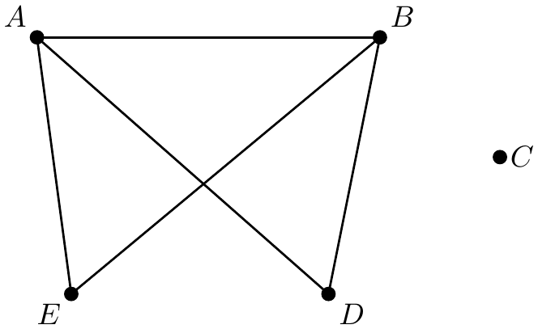
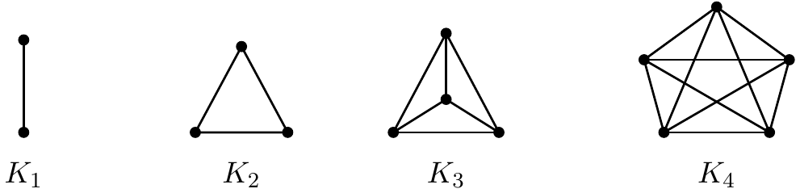
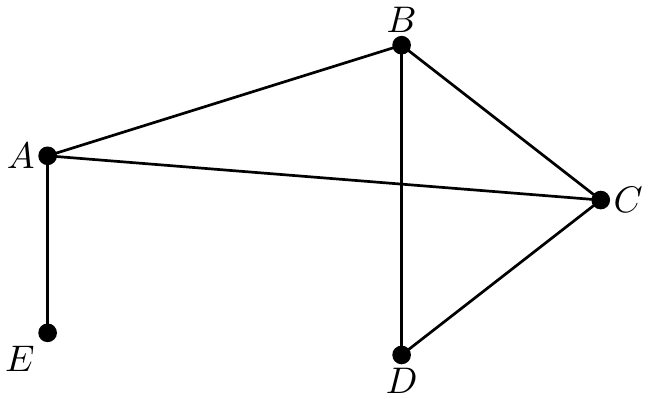
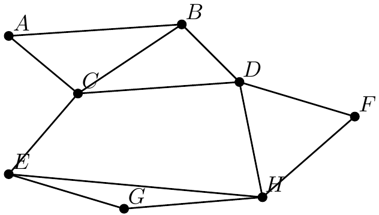
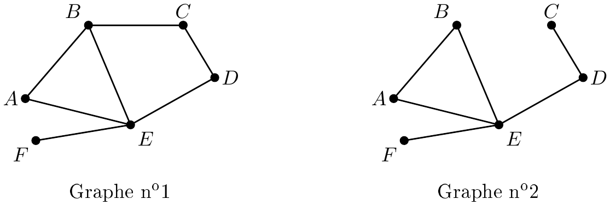
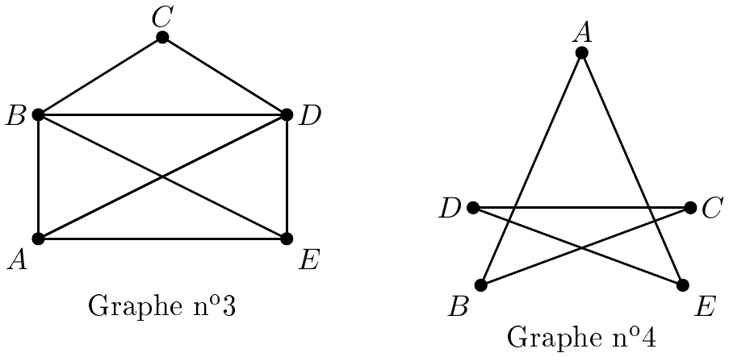
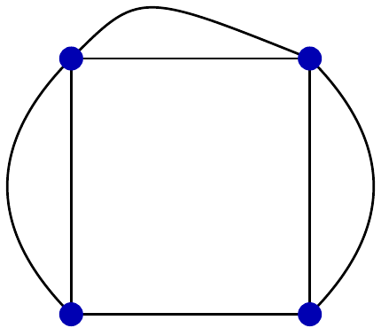

Chapitre 7 : Les graphes
Maths expertes · Chapitre 7 — Les graphes · cours de Frederik de Peyrelongue
I. Définitions
On appelle graphe non orienté la donnée d'un ensemble de points, les sommets du graphe, et d'un ensemble de lignes, les arêtes du graphe, qui relient certains sommets entre eux.
- Le nombre de sommets d'un graphe est l'ordre du graphe.
- Deux sommets reliés entre eux par une arête sont adjacents.
- Le degré d'un sommet est le nombre d'arêtes dont ce sommet est une extrémité.
- Un sommet qui n'est adjacent à aucun autre est un sommet isolé.
- Un graphe est dit simple si au plus une arête relie deux sommets et s'il n'y a pas de boucle sur un sommet.
On considère le graphe $G$ ci-dessous :

Le graphe a $5$ sommets : l'ordre de $G$ est $5$. Il est simple.
Les sommets $E$ et $D$ ne sont pas adjacents.
Le sommet $C$ est un sommet isolé.
Tableau des degrés des sommets du graphe :
| Sommet | $A$ | $B$ | $C$ | $D$ | $E$ |
| Degré | $3$ | $3$ | $0$ | $2$ | $2$ |
Soit $G$ un graphe non orienté.
Le graphe $G$ est dit complet si deux sommets quelconques distincts du graphe sont toujours adjacents.
Autrement dit : tous les sommets sont reliés deux à deux par une arête.
Les graphes ci-dessous sont des graphes complets d'ordre $2$, $3$, $4$ et $5$, communément appelés $K_{1}$, $K_{2}$, $K_{3}$, $K_{4}$, en hommage au mathématicien polonais Kazimierz Kuratowski, qui a beaucoup apporté à la théorie des graphes.

La somme des degrés des sommets dans un graphe non orienté est égale au double du nombre d'arêtes.
Conséquence : le nombre de sommets de degré impair est donc nécessairement pair.
II. Parcours dans les graphes – Matrice associée
2.1 Chaînes et cycles
Considérons un graphe non orienté.
Une chaîne est une succession d'arêtes telle que l'extrémité de chacune (sauf la dernière) est l'origine de la suivante.
- Le nombre d'arêtes qui composent une chaîne est appelé la longueur de la chaîne.
Une chaîne fermée est une chaîne dont l'origine et l'extrémité coïncident.
Un cycle est une chaîne fermée dont les arêtes sont toutes distinctes.
Dans le graphe ci-dessous :
- $E-A-C-B-D$ est une chaîne de longueur $4$.
- $E-A-B-C-A-E$ est une chaîne fermée de longueur $5$. Ce n'est pas un cycle, car l'arête entre $A$ et $E$ est parcourue deux fois.
- $D-B-A-C-D$ est un cycle de longueur $4$.

2.2 Matrice associée à un graphe
Soit $G$ un graphe non orienté d'ordre $n$.
On numérote les sommets de $G$ de $1$ à $n$.
On appelle matrice d'adjacence associée à $G$ la matrice $A$ dont chaque terme $a_{i,j}$ est le nombre d'arêtes reliant les sommets $i$ et $j$ (pour tout $1\leqslant i\leqslant n$ et $1\leqslant j\leqslant n$).
La matrice d'adjacence associée au graphe de l'exemple précédent est, en supposant les sommets classés dans l'ordre alphabétique :
Dans le cas d'un graphe non orienté, une telle matrice est nécessairement symétrique.
Soit $G$ un graphe non orienté d'ordre $n$ et $A$ sa matrice d'adjacence. On suppose que les sommets de $G$ sont numérotés de $1$ à $n$.
Le terme $a_{i,j}^{k}$ à l'intersection de la $i$-ème ligne et de la $j$-ème colonne de la matrice $A^{k}$ ($k\in\N^{*}$) est le nombre de chaînes de longueur $k$ reliant le sommet $i$ au sommet $j$.
Un orchestre doit effectuer une tournée passant par les villes $A$, $B$, $C$, $D$, $E$, $F$, $G$ et $H$ en utilisant le réseau autoroutier.
Le graphe $G$ ci-dessous représente les différentes villes de la tournée et les autoroutes reliant ces villes (une ville est représentée par un sommet et une autoroute par une arête). Notons $M$ la matrice d'adjacence associée au graphe $G$ (les sommets sont pris dans l'ordre alphabétique).

On donne la matrice $M^{3}$ :
Le nombre de chaînes de longueur $3$ reliant $A$ à $D$ est de $2$.
Ces chaînes sont : $A-B-C-D$ et $A-C-B-D$.
Le nombre de chaînes de longueur $3$ reliant $E$ à $F$ est de $3$.
Ces chaînes sont : $E-C-D-F$, $E-H-D-F$, $E-G-H-F$.
III. Parcours eulériens
3.1 Connexité
Un graphe $G$ est connexe si deux sommets quelconques de $G$ sont toujours reliés par une chaîne.

Le graphe no1 est connexe, mais pas le graphe no2 : en effet, les sommets $E$ et $F$ ne peuvent pas être reliés par une chaîne.
Dans le graphe no1, l'arête $B-C$ est appelée un isthme. Sa suppression dans le graphe no1 « déconnecte » le graphe (et donne le graphe no2).
3.2 Chaînes et cycles eulériens
On appelle chaîne eulérienne d'un graphe $G$ toute chaîne qui contient une fois et une seule chaque arête du graphe $G$.
On appelle cycle eulérien toute chaîne eulérienne fermée.

Dans le graphe no3, $A-B-C-D-A-E-B-D-E$ est une chaîne eulérienne (parmi d'autres). Dans le graphe no4, $A-B-C-D-E-A$ est un cycle eulérien (parmi d'autres).
Soit $G$ un graphe connexe.
$G$ admet une chaîne eulérienne si, et seulement si, le nombre de sommets de degré impair dans $G$ est $0$ ou $2$.
Un graphe connexe $G$ admet un cycle eulérien si, et seulement si, tous les sommets de $G$ sont de degré pair.
Si le graphe connexe a deux sommets de degré impair, ce sont les extrémités de la chaîne eulérienne. Un graphe ayant plus de deux sommets de degré impair ne possède pas de chaîne eulérienne.
Reprenons le graphe de l'exemple 5.
Il ne compte que deux sommets de degrés impairs : $B$ et $E$. On peut donc donner une chaîne eulérienne reliant $B$ à $E$ :

Le graphe obtenu a $4$ sommets de degré impair : il ne contient donc pas de chaîne eulérienne.